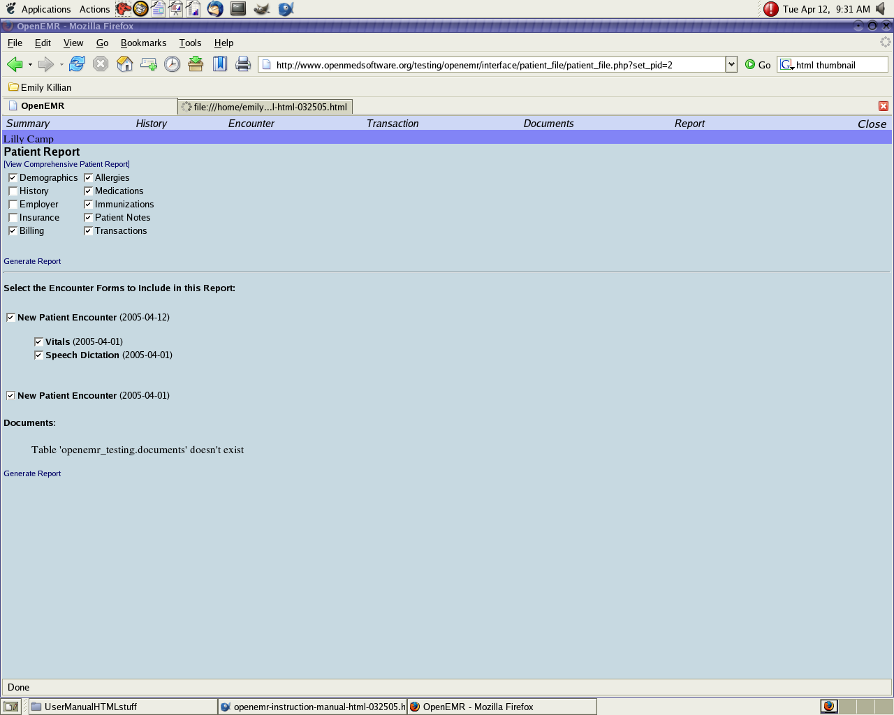
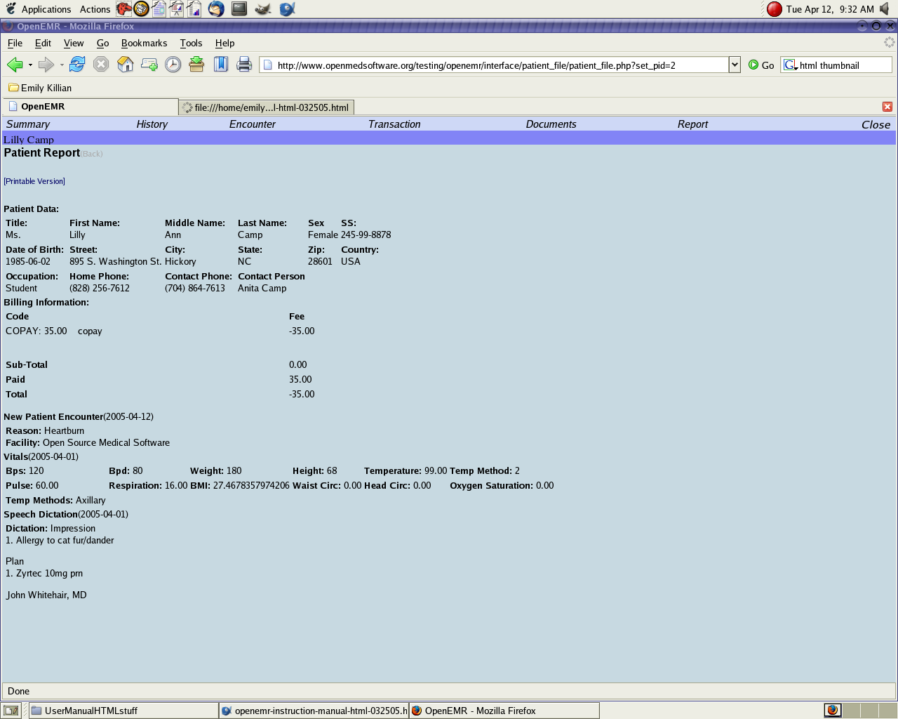

REPORTING
Creating reports
From the patient's summary screen, click on report at the top rail.
Choose the patient information that should be included by checking the boxes beside desired information.
After making selections, click on generate report.
Please click on the following thumbnails for more detailed pictures.


Printing reports
After generating a report, click on printable version.
Print the document and close the print window.
Work and school notes
To create a work or school note that relates to a specific visit, go into the patient's account and click on encounter.
Choose the correct date of service from the list and under the new form column, choose work/school note.
From the drop down menu, choose whether it will be a work or school note.
Personalized messages about the patient's absence can be added in the input box for messages.
Choose the correct provider from the drop down list and hit save.
Once the note has been saved, click on printable view and print the note.
Make sure to send the document to the correct printer.
Back Index Next
{kind=link}
{kind=link}